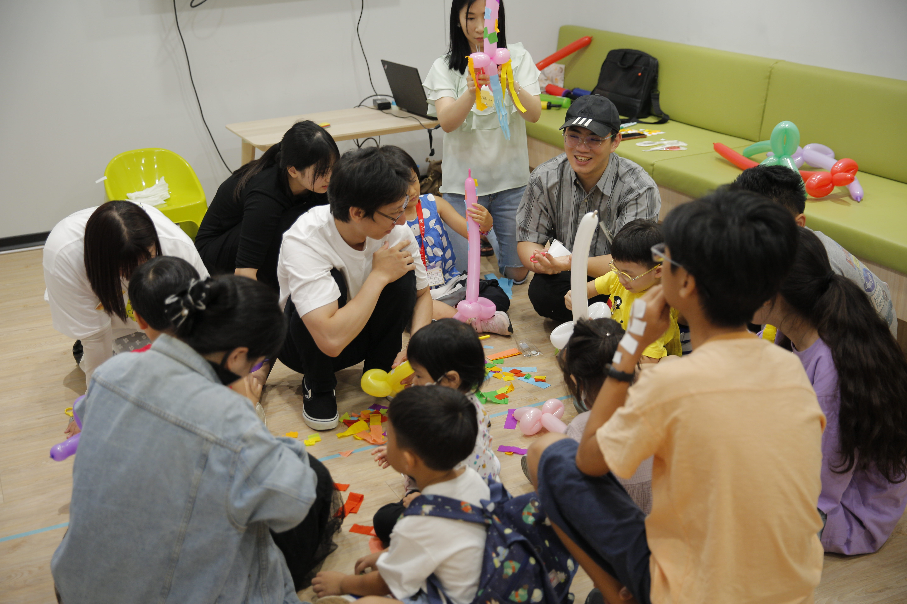

認識 Bee Kids
一個讓孩子被愛、被教導，也學習服事的地方。
我們的異象
生活在天父的花園裡，成為天父的孩子，所到之處都留下愛與福音的花粉。
我們希望孩子不只是「來上課」，而是在教會裡有歸屬感，認識耶穌，並把所學帶回家庭與生活。

老師怎麼陪伴孩子
Bee Kids 的老師是孩子的「教練」，不是「保母」。我們透過說話、行為與榜樣，引導孩子認識神、融入教會生活。
- 老師都是經過面談與預備的教會義工，並定期參加義工月會與訓練。
- 每週有固定的服事團隊與分班，讓孩子有熟悉的面孔。
- 我們重視孩子的安全、尊重與感受。

6B 核心價值
培養孩子活出教會 6B 核心價值，在日常生活中實踐信仰、成為祝福。

信靠耶穌Believing in Jesus
歡迎回家Belonging to family
成為領袖Becoming a leader
為敬拜而生Born to worship
帶來盼望Bringing people hope
建造神國Building God’s kingdom